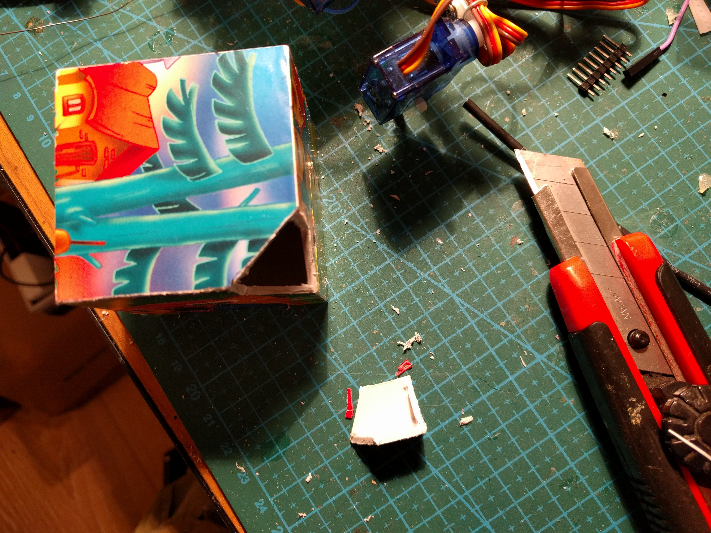

Pimp Your Bot¶
Published on 2016-11-09 in Tote.
The winter is coming, and my robots need some maintenance – after a year of traveling to various conferences and fairs, they accumulated a number of injuries. It’s also a good idea to recharge the lipo batteries once in a while.
I started repairing the robots, replacing broken servos, tuning them, etc. – and at some point I realized that they actually look pretty drab. Just a bunch of wires and servos, really. Of course, the idea was to make them as simple and easy to make as possible, so that’s just expected, but still they don’t look like something you would actually want to have. That’s when I decided to take one of the prototypes (incidentally, the one that I used for proprioception experiments), and make a chassis for it, to make it look a little bit better.\
So I went to the Internets and started to look through concept art of various robots. I’m quite surprised and saddened by how many of those are simply “a human in suit with a weird helmet”. Oh well. Finally, I found one drawn by Paul Denton that fits Tote well and should be simple enough to make:
It’s a bit dark and gritty, but that’s even better – any mistakes I make will not be as visible. So I started with a plastic box – from a set of toy blocks for kids. Of course I started by cutting the corners:
Then I removed the legs from the robot, and installed the PCB inside the box:\
I had to cur the sides of the box, and also the “ears” on the servos – to make them fit properly without colliding with the box or with themselves. Once I was happy with the shape, I hot-glued the PCB securely in place and started painting. I’m using acrylic paints for painting tabletop battle miniatures. It sticks pretty well to plastic.
Once I had the base coat ready and it all dried, I started to dry- brush some of the wear and old paint on it, then dry-brushed the whole thing with metallic paint, to make it look like beaten metal.\
Next, I had to do something with the wires. They are way too long, there is not enough space inside to hide them, and they are the wrong color. After some deliberation, I decided to just cut them to size:
And then I also painted them black. Some mor dry-brushing, and it’s almost ready. I also made a hole at the top for the IR sensor for the remote to stick out.\

Next, I worked on the eyes. I found some plastic lenses for LEDs in my drawer, and some red LEDs:\
A bit of glue to secure the LEDs in place, some more to glue the lenses into the eyes, and some resistors and wires, and it’s almost ready. Now I just need to wait for the glue to set…